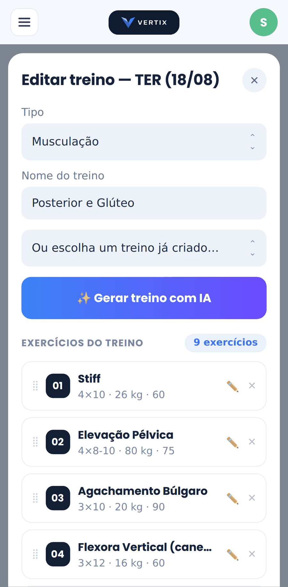
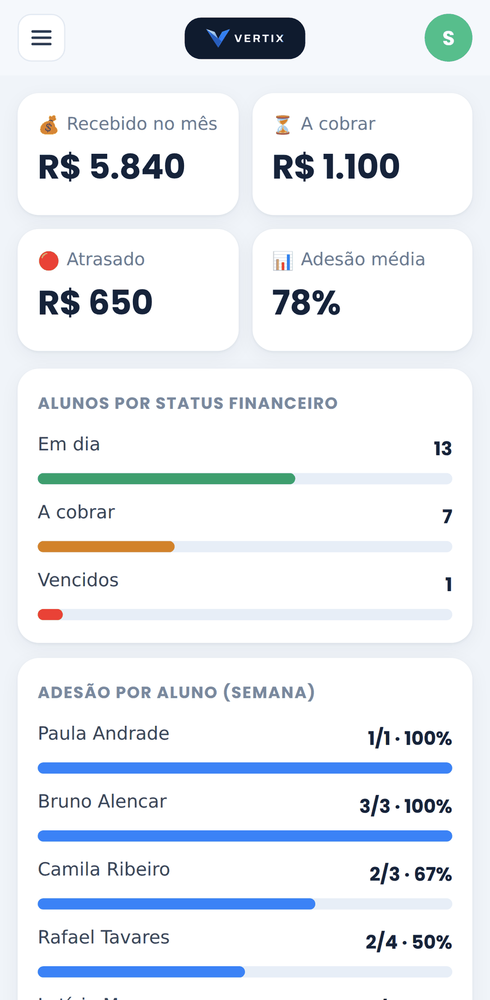
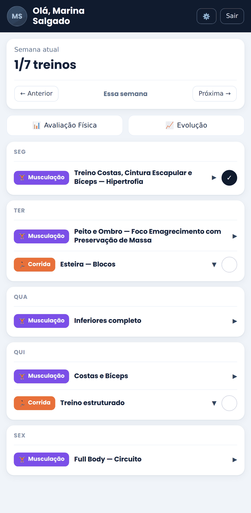
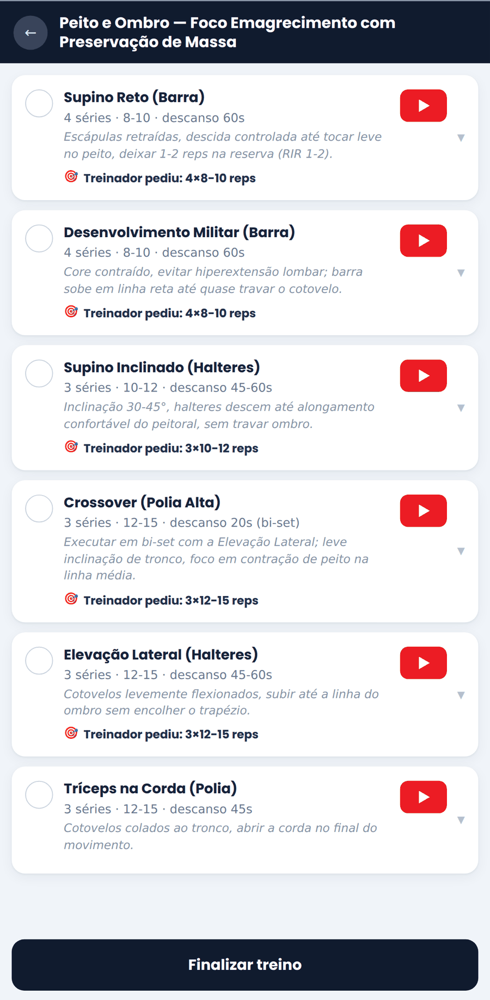
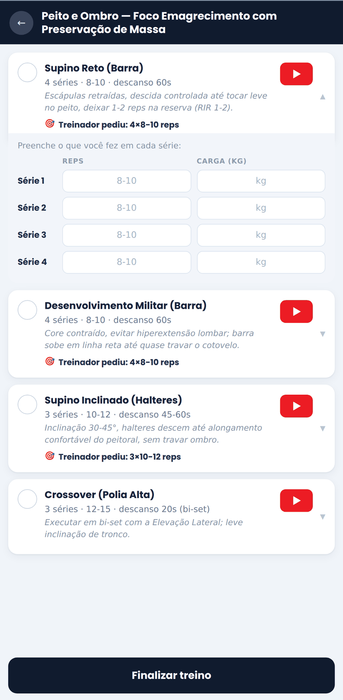

Prescrição de treinos
Calendário semanal por aluno, navegável. Musculação, corrida, bike, natação e mobilidade — cada uma com o formato certo.
O Vertix organiza a vida do personal trainer: prescrição de treinos, acompanhamento da execução, avaliação física com evolução, frequência, financeiro e comunicação com o aluno — sem planilha solta, sem treino perdido no WhatsApp.
Aplicativo web (PWA) — funciona no navegador e instala no celular.
Um sistema web (SaaS) feito para a rotina real de quem treina gente.
Personal trainers se viram com um amontoado de ferramentas soltas: planilha para montar o treino, WhatsApp para enviar, papel ou app genérico para a avaliação física, e a memória (ou um caderninho) para lembrar quem pagou e quem está sumindo. Isso consome tempo, gera erro e passa uma imagem menos profissional para o aluno.
O Vertix reúne tudo num lugar só. O treinador monta treinos rápido, acompanha quem treinou e quem precisa de atenção, registra e compara avaliações físicas, controla frequência e mensalidades, e mantém o aluno engajado com um app próprio. Menos trabalho operacional, mais tempo para treinar gente — e uma experiência mais profissional para o aluno.
Ele se cadastra com um código de convite seu, recebe os treinos, marca o que fez e envia feedback.
PWA responsivo, instalável na tela inicial e com notificações push — porque o trabalho acontece no telefone.
Os dois lados do sistema: o painel que você usa e o app que o seu aluno recebe.
Quantos alunos ativos, quem está em risco, quem precisa de atenção e os horários de hoje.

Exercício por exercício, com séries, carga e descanso — ou deixe a IA fazer o rascunho.

Recebido no mês, o que está a cobrar, o que atrasou — e a adesão de cada aluno na semana.

O aluno abre e vê o que tem para fazer em cada dia, e o que já concluiu.

Séries, descanso, a orientação que você escreveu e o vídeo para conferir a técnica na hora.

Repetições e carga série a série. O que ele preenche volta para você, sem precisar perguntar.
Telas do Vertix com dados de demonstração: todos os nomes e números são fictícios. Nenhum dado de aluno real é exibido publicamente.
Todos os módulos que o dia a dia da consultoria exige — do primeiro treino à mensalidade.
Calendário semanal por aluno, navegável. Musculação, corrida, bike, natação e mobilidade — cada uma com o formato certo.
Cartões com séries, repetições, carga, descanso, observações e vídeo do YouTube. Corrida e bike em blocos estruturados ou modo simples.
Modelos de treino organizados em pastas para reaproveitar, e um banco de exercícios com vídeos por grupo muscular — que você pode ampliar.
Informe sexo, idade, peso, altura, objetivo, nível, foco, dias por semana, equipamentos e restrições — a IA monta o treino seguindo um protocolo de segurança e explica o porquê de cada sessão. Você revisa e edita antes de salvar.
Cálculo de 1RM e intensidade pela fórmula de Brzycki — mais conservadora e validada — além do volume (séries × reps × carga).
Conduza o treino junto do aluno, tique exercício por exercício e registre as cargas realizadas na hora.
Ele vê os treinos do dia, assiste aos vídeos, marca como concluído e envia feedback com esforço percebido (RPE) e comentário.
Destaca sozinho quem está sem treinar, quem relatou dor ou desconforto e quem tem feedback esperando resposta.
Peso, dobras cutâneas, circunferências, % de gordura, massa magra, IMC, RCQ e fotos. Compare avaliações em gráficos e tabela para ver a evolução de cada medida.
Calendário de presença por aluno e contagem de aulas entre pagamentos, útil para pacotes. A agenda mostra os horários do dia: "13h Fulano · 14h Ciclano".
Mensalidades e pacotes, cobranças e pagamentos, com visão do recebido no mês — e a opção de ocultar o valor por privacidade.
Fale com o aluno no WhatsApp em um toque e defina fases da semana e planos de periodização, com aviso automático para ele.
Dois fluxos simples: um para você, outro para o seu aluno.
Crie sua conta Cadastro rápido, com seus dados e seus alunos organizados desde o primeiro dia.
Cadastre os alunos Adicione você mesmo ou envie o código/link de convite para o aluno se cadastrar sozinho.
Monte os treinos Manualmente, reaproveitando um modelo da biblioteca ou com o gerador por IA — sempre com você revisando.
Acompanhe pelo painel Veja quem treinou hoje, quem precisa de atenção, quais feedbacks aguardam resposta e quem deve pagar.
Meça e converse Registre avaliações físicas, compare a evolução em gráficos e fale com o aluno em um toque.
Receba o convite Com o código do seu treinador, você cria sua conta em minutos.
Veja o treino do dia Abra o app e encontre exatamente o que fazer, com séries, cargas e descanso.
Assista e execute Cada exercício traz o vídeo para você conferir a técnica antes de fazer.
Marque e dê feedback Conclua o treino e conte como foi: esforço percebido e um comentário para o treinador.
Veja sua evolução Acompanhe suas avaliações físicas e o progresso ao longo do tempo.
Dados de treino e de saúde são sensíveis. Tratamos assim.
Nenhuma conexão externa é ativada sem autorização explícita do titular — e ela pode ser desfeita quando ele quiser.
Seus dados e os dos seus alunos não são vendidos nem usados para publicidade. Ponto.
Dúvidas sobre o produto, parcerias ou solicitações relacionadas aos seus dados.
Responsável: Silvio Arruda · CNPJ 29.604.613/0001-10
São Paulo/SP · Brasil